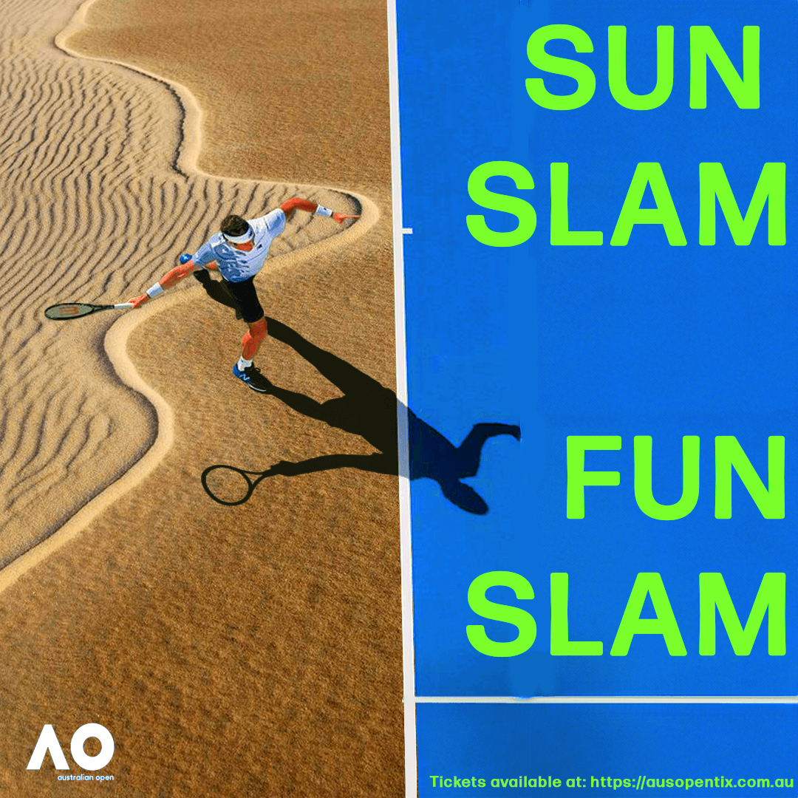
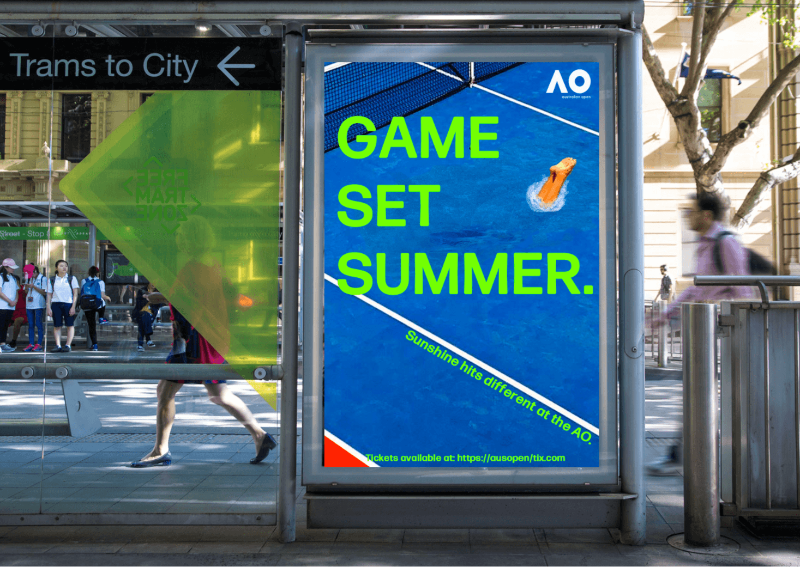

CAMPAIGN 01: AUSTRALIAN OPEN 2025
Challenge: Tennis is viewed as formal, elite, restrained.
Insight: Australian Open is loved for the sunny atmosphere as much as the sport.
Idea: Embrace the privilege of having the Australian Open during summer, celebrating sunshine, play and fun. Inspired by Roger Federer calling it "the happy slam".



